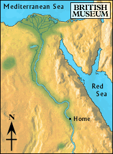

Fertile land

The boat was tied up on shore and the boy got off. He walked up the bank and soon reached the fields where the farmers were planting their crops. After a short rest, he began to walk again.
A local girl told him that a group of the pharaoh's men had just set out for the turquoise mines. Could his brother be one of those men? The girl also told him that a trading ship was leaving for the coast the next day.
Should he go to through the desert to the mines, or to the coast?